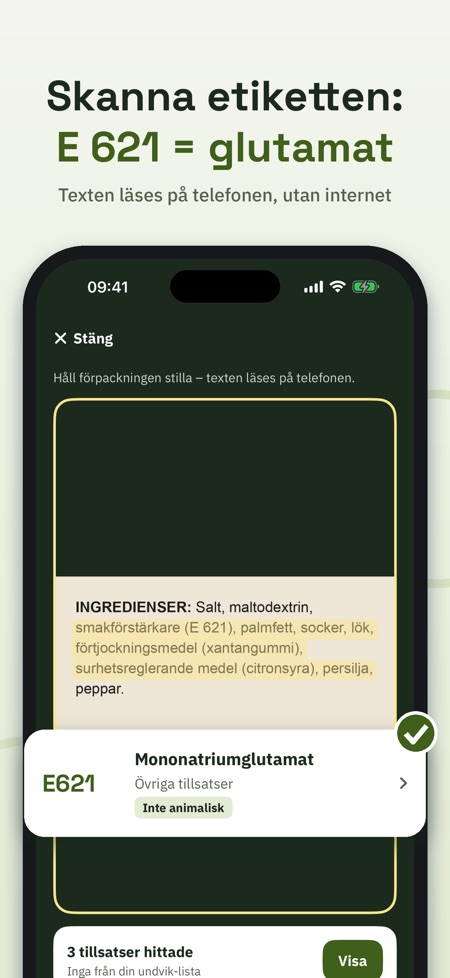
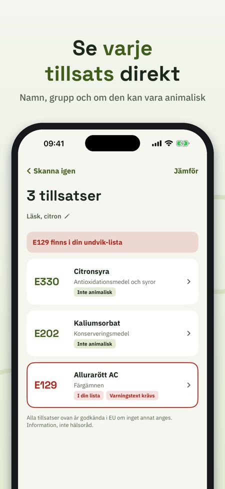
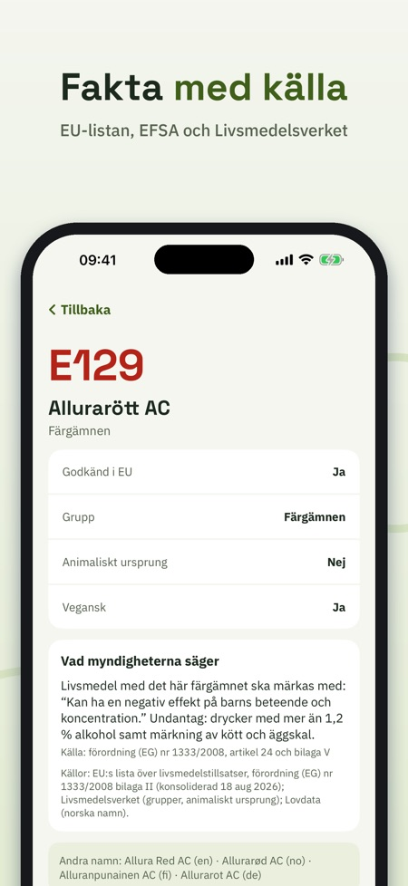

E-koll läser innehållsförteckningen med kameran och förklarar varje tillsats, lugnt, kort och med källa. Du ser också om en tillsats kan vara av animaliskt ursprung.



E-nummer är tillsatser från EU:s förordning om livsmedelstillsatser. Appen visar namn, grupp och om tillsatsen kan vara av animaliskt ursprung.
Alla 339 E-nummer på EU:s lista, med källa där en myndighet säger något extra.
Rikta kameran mot ingredienserna. E-koll hittar både E-nummer (E 330) och namn (citronsyra), även på norska, danska, finska, tyska och engelska.
Nej, ingen bild sparas eller skickas.
Appen visar om en tillsats kan vara av animaliskt ursprung, så du kan slå upp E 120 direkt i appen.
Ja, texten läses direkt på din iPhone, även utan internet.
Full version är ett engångsköp, ingen prenumeration. Utan köp får du 5 skanningar per dag samt sök och fakta om alla tillsatser, grupper och guider.
Vad är E 471? Och är E 120 veganskt? E-koll läser innehållsförteckningen med kameran och förklarar varje tillsats – lugnt, kort och med källa.
Utan köp: 5 skanningar per dag, plus sök och fakta om alla tillsatser, grupper och guider. E-koll Full (engångsköp, ingen prenumeration): obegränsade skanningar, undvik-lista, historik och jämförelse.
SKANNA ETIKETTEN
Rikta kameran mot ingredienserna. Texten läses direkt på din iPhone, även utan internet. E-koll hittar både E-nummer (E 330) och namn (citronsyra), även på norska, danska, finska, tyska och engelska. Ingen bild sparas eller skickas.
ALLA TILLSATSER PÅ EU-LISTAN
339 E-nummer från EU:s förordning om livsmedelstillsatser, med namn på sex språk, grupp och om tillsatsen kan vara av animaliskt ursprung. Där en myndighet säger något extra står det med källa: till exempel varningstexten för sex färgämnen, att titandioxid (E 171) inte längre är tillåtet i livsmedel och märkningsregler för sötningsmedel och sulfiter.
SÖK OCH BLÄDDRA
Sök på nummer eller namn på vilket språk som helst. Bläddra i sex grupper: färgämnen, konserveringsmedel, antioxidationsmedel och syror, förtjockningsmedel, sötningsmedel och övriga.
DIN EGEN UNDVIK-LISTA
Välj de tillsatser du själv vill undvika – av egna skäl. Snabbval: färgämnen med varningstext, kan vara animaliskt, sötningsmedel, sulfiter, nitriter. Varje skanning markerar dem tydligt.
HISTORIK OCH JÄMFÖRELSE
Ge skanningen ett namn och hitta den igen. Jämför två etiketter sida vid sida.
LÄR DIG
Korta guider: vad E betyder, hur en tillsats godkänns, hur man läser en innehållsförteckning, varningstexten om färgämnen och vegansk eller inte.
E-koll ger information, inte hälsoråd. Godkänd i EU är utgångspunkten. Appen är fristående och inte knuten till EU, EFSA eller någon livsmedelsmyndighet.